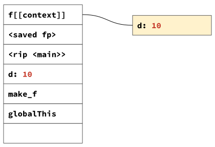
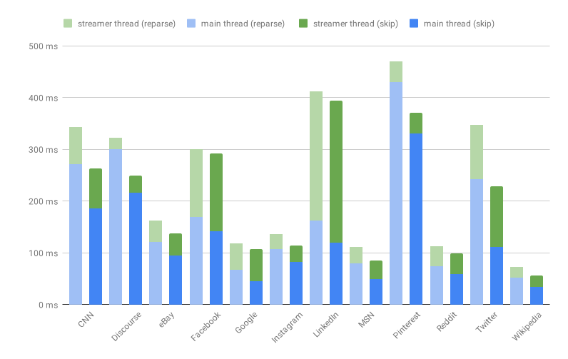

极速解析（二）: 延迟解析（Lazy Parsing）
原文→
这是本系列文章的第二部分，介绍V8如何尽可能快地解析JavaScript。第一部分解释了我们如何使V8的扫描器更快。
解析是将源代码转换为中间代码的步骤，中间代码由编译器处理（在V8中，Ignition是字节码编译器）。解析和编译是在网页启动的关键路径上进行的，在启动过程中，并非所有发送到浏览器的函数都是立即必要的。虽然开发人员可以使用async和defer脚本来延迟这类代码，但这并不总是可行的。此外，许多web页面提供的代码仅供某些功能使用，而这些功能在页面单独运行的任何时候可能根本无法被用户访问。
非必要地主动（eagerly）编译代码会带来实际的资源开销：
- CPU周期被用于生成代码，对于启动实际需要的代码来说，耽误其可用性。
- 代码对象占用内存，至少直到当前不需要该代码并允许对其进行垃圾回收为止，才决定刷新字节码（bytecode flushing）。
- 顶层脚本完成执行时，编译的代码最终缓存在磁盘上，从而占用磁盘空间。
由于这些原因，所有主流浏览器都实现了延迟解析（lazy parsing）。解析器（parser）不必为每个函数生成一个抽象语法树（AST）且编译为字节码，也不必完全解析它们，而是“预解析（pre-parse）”它遇到的函数。它通过切换到预解析器（preparser）来实现这一点，预解析器是解析器的一个副本，它只需做最少的工作就可以略过函数。预解析器验证它略过的函数在语法上是有效的，并生成外部函数编译正确所需的全部信息。之后，当调用预解析后的（preparsed）函数时，它将按需进行完全解析和编译。
变量分配
使预解析（pre-parsing）变得复杂的主要原因是变量分配。
出于性能原因，函数执行（activations）是在计算机的栈（stack）上进行管理。例如，假设函数g调用函数f，并传入参数1和2：
1 | function f(a, b) { |
首先将接收器（即f的this值，这里是指全局的this（globalThis），因为它是一个粗略的函数调用）压入栈，紧接着是被调用的函数f。然后参数1和2被压入栈。此时函数f被调用。要执行该调用，我们首先在栈上保存g的状态：f的“返回指令指针（return instruction pointer）”（rip；我们需要返回的代码）以及“帧指针（frame pointer）”（fp；返回时栈的样子）。然后进入f，它为局部变量c分配空间，以及它可能需要的任何临时空间。这可以确保函数执行（activation）超出作用域时，函数使用的任何数据将消失：它只是简单地从栈中弹出。
调用函数f的栈布局，以及分配到栈上的参数a、b和局部变量c。
这种设置的问题在于函数可以引用外部函数中声明的变量。内部函数可能在它们被创建激活（activation）后继续存在：
1 | function make_f(d) { // ← 声明 `d` |
上面的示例中，在make_f返回（return）后，将计算make_f中声明的从inner到局部变量d的引用。为了实现这一点，具有词法闭包（lexical closures）的语言的虚拟机（VMs）在一种名为“上下文（context）”的结构中分配变量，该变量存放在堆（heap）里，被内部函数所引用。

调用make_f的栈布局。该调用将参数复制分配到一个在堆里的上下文中，然后供捕获d的inner使用。
这意味着，对于函数中声明的每个变量，我们需要知道内部函数是否引用该变量，这样我们就可以决定是把变量分配到栈上还是在已分配堆（heap-allocated）的上下文里。当我们计算函数字面量时，我们分配一个闭包，它既指向函数的代码，也指向当前上下文：该对象包含可能需要访问的变量值。
长话短说，我们至少需要跟踪预解析器中的变量引用。
如果我们只跟踪引用，我们会高估被引用的变量。在外部函数中声明的变量可能会被内部函数中的重新声明所覆盖，从而使来自该内部函数的引用以内部声明为目标，而不是外部声明。如果我们无条件地在上下文中分配外部变量，性能将受到影响。因此，为了使变量分配正确地与预解析（preparsing）一起工作，我们需要确保预解析后的（prepared）函数正确地跟踪变量引用和声明。
顶层代码是此规则的例外。脚本的顶层总是堆分配的，因为变量在脚本中是可见的。接近良好工作架构的一个简单方法是运行预解析器，但不使用变量跟踪来快速解析顶层函数；对内部函数使用完整的解析器，但略过编译。这比预解析（preparsing）成本高，因为我们非必要地建立了一棵完整的AST，但它使我们正常运行起来。这正是V8在V8 v6.3/Chrome 63上的表现。
指导预解析器如何处理变量
在预解析器中跟踪变量声明和引用是很复杂的，因为在JavaScript中，从一开始并不总是清楚片段表达式的含义。例如，假设我们有一个函数f，包含一个参数d，f有一个内部函数g，g里有一个表达式，看起来像是引用了d。
1 | function f(d) { |
它可能最终引用d，因为我们看到的token是一个解构赋值表达式的一部分。
1 | function f(d) { |
它也可能最终成为一个带解构参数d的箭头函数，在这种情况下，g不会引用f中的d。
1 | function f(d) { |
最初，我们的预解析器是作为解析器的独立副本实现的，没有太多的共享，这导致两个解析器随着时间的推移而不同。通过将解析器和预解析器重写为基于实现奇异递归模板模式的ParserBase，我们设法最大限度地实现共享，同时保持单独副本的性能优势。这大大简化了向预解析器添加完整的变量跟踪，因为实现的大部分内容可以在解析器和预解析器之间共享。
实际上，忽略变量声明和引用，即使对于顶层函数也是不正确的。ECMAScript规范要求在第一次解析脚本时检测到各种类型的变量冲突。例如，假设一个变量在同一作用域内被两次声明为词法变量，则被认为是早期语法错误。由于预解析器只是略过了变量声明，所以在预解析（preparse）期间它会错误地允许代码通过。当时我们认为赢得性能是规范冲突的正当理由。但是，既然预解析器正确地跟踪了变量，我们就消除这类与变量解析相关的规范冲突，而不会造成显著的性能损失。
略过内部函数
如前所述，当第一次调用预解析后的（preparsed）函数时，我们完全解析它并将得到的AST编译为字节码。
1 | // 这是顶层作用域 |
函数直接指向外部上下文，该上下文包含内部函数需要使用的变量声明的值。为了允许延迟编译函数（并支持调试器），上下文指向一个名为ScopeInfo的元数据对象。ScopeInfo对象描述上下文中列出的变量。这意味着在编译内部函数时，我们可以计算变量在上下文链中的位置。
但是，要计算延迟编译函数本身是否需要上下文，我们需要再次执行作用域解析：我们需要知道嵌套在延迟编译函数中的函数是否引用延迟函数声明的变量。我们可以通过重新预解析（re-preparsing）这些函数来解决这个问题。这正是V8在V8 v6.3/Chrome 63上的表现。不过，这并不是理想的性能，因为它使源码大小和解析开销之间的关系变得非线性：我们预解析（preparse）函数的次数将会与嵌套函数的个数一样多。除了动态程序的自然嵌套之外，JavaScript打包程序通常将代码包装在“立即调用函数表达式”（IIFEs）中，这使得大多数JavaScript程序具有多个嵌套层。
每次重新解析至少都增加了解析函数的开销。
为了避免非线性的性能开销，我们甚至在预解析（preparsing）过程中执行全作用域解析。我们存储了足够的元数据，以便之后可以简单地略过内部函数，而不必重新预解析（re-preparse）它们。一种方法是存储内部函数引用的变量名。这是昂贵的存储，并仍然要求我们重复工作：我们已经在预解析（preparse）期间执行了变量解析。
相反，我们序列化分配变量的地址，如同一个标记每个变量的密集数组。当我们延迟解析一个函数时，将按照预解析器看到它们的顺序重新创建变量，并且我们可以简单地将元数据应用于变量。既然已经编译了函数，就不再需要变量分配元数据，并且可以对其进行垃圾回收。由于我们只需要这些元数据用于实际上包含内部函数的函数，因此所有函数中的很大一部分甚至都不需要此元数据，从而大大减少了内存开销。
通过跟踪预解析后的（preparsed）函数的元数据，我们可以完全略过内部函数。
与重新预解析（re-preparsing）内部函数的开销一样，略过内部函数的性能影响是非线性的。有些网站将其所有函数提升到顶层作用域。由于它们的嵌套级别始终为0，因此开销始终为0。然而，许多现代网站实际上都有很深的嵌套函数。当这个功能在v8 v6.3/chrome 63中发布时，在这些网站上，我们看到了显著的改进。主要的优点是现在代码的嵌套程度已经不再重要了：任何函数最多只预解析（preparsed）一次，以及完全解析一次[1]。

主线程和脱离主线程的解析时间，启动前后“略过内部函数”优化。
可能调用函数表达式
如前所述，打包程序通常将多个模块合并到一个文件中，方法是将模块代码封装在一个立即调用的闭包中。这为模块提供了隔离，允许它们像脚本中唯一的代码一样运行。这些函数本质上是嵌套脚本；这些函数在脚本执行时立即调用。打包程序通常会将立即调用函数表达式（IIFEs；发音为“iffies”）转换为括号函数：(function(){…})()。
由于这些函数在脚本执行期间是立即需要的，所以预解析（preparse）这些函数有点不理想。在顶层的脚本执行过程中，我们需要立即编译函数，并对函数进行完全解析和编译。这意味着，我们之前为了加速启动而进行的更快的解析，肯定会给启动带来不必要的额外开销。
你可能会问，为什么不简单地编译被调用的函数呢？虽然开发人员通常会直接注意到函数何时被调用，但解析器却不是这样。解析器需要在开始解析一个函数之前做出决定，是主动（eagerly）编译函数还是推迟编译。语法中的模糊性使简单地快速扫描到函数末尾变得困难，而且开销很快与常规预解析（preparsing）相似。
由于这个原因，V8有两个简单的模式，可以将其识别为可能调用函数表达式（PIFEs；发音为“piffies”），并在其上主动（eagerly）解析和编译函数：
- 如果一个函数是括号函数表达式，即
(function(){…})，我们假设它将被调用。我们一看到这种模式的开始就做出这个假设，也就是(function。 - 从v8 v5.7/Chrome 57开始，我们还检测这种由UglifyJS生成的模式
!function(){…}(),function(){…}(),function(){…}()。我们一旦看到!function或者function就开始这种检测，如果它跟随一个PIFE。
由于V8主动（eagerly）编译PIFEs，因此它们可以用作概要导向反馈（profile-directed feedback）[2]，通知浏览器启动需要哪些函数。
在V8仍然重新解析内部函数的时候，一些开发人员已经注意到JS解析对启动的影响非常大。optimize-js基于静态启发法（static heuristics）将函数转换为PIFEs。在创建包时，这对V8上的负载性能产生了巨大的影响。我们复制了optimize-js提供的在v8 v6.1上运行的基准测试结果，只查看精简后的脚本。
主动（eagerly）解析和编译PIFEs会使冷启动和热启动稍微快一些（第一和第二页加载，测量总的解析+编译+执行时间）。但是，由于对解析器的显著改进，v8 v7.5上的优势要比v8 v6.1上的小得多。
尽管如此，现在我们不再重新解析内部函数，而且由于解析器速度更快，所以通过optimize-js获得的性能改进将大大降低。实际上，v7.5的默认配置已经比运行在v6.1上的优化版本快得多。即使在v7.5上，对于启动期间需要的代码，谨慎地使用PIFEs仍然是有意义的：我们避免预解析（preparse)，因为我们很早就知道将需要该函数。
optimize-js基准测试结果并不完全反映实际情况。脚本是同步加载的，整个解析+编译时间都计入加载时间。在实际设置中，你可能会使用<script>标签加载脚本。这使得Chrome的预加载程序能够在脚本被求值（evaluated）之前发现它，并在不阻塞主线程的情况下下载、解析和编译脚本。我们决定主动（eagerly）编译的所有内容都会自动脱离主线程进行编译，并且应该只在最小程度上计入启动时间。运行非主线程脚本编译会放大使用PIFEs的影响。
然而仍旧有成本，尤其是内存成本，因此主动（eagerly）编译所有内容不是一个好主意：
主动（eagerly）编译所有JavaScript都要付出巨大的内存开销。
虽然在启动过程中为需要的函数加上括号是一个好主意（例如，基于概要（profiling）启动），但是使用像optimize-js这样的包应用简单的静态启发法并不是一个好主意。例如，假设一个函数如果它作为另一个函数调用的参数，则在启动期间它将被调用。但是，如果这样一个函数实现了整个模块，且该模块很长时间后才需要使用，那么最终编译的代码就太多了。过度主动（eagerly）编译对性能不利：没有延迟编译的V8显著地减少了加载时间。此外，optimize-js的一些好处来自于UglifyJS和其它压缩工具（minifiers）的问题，它们删除了非IIFEs的PIFEs的括号，以及删除有用的提示，这些提示本可以应用于例如通用模块定义（UMD）风格的模块。这很可能是压缩工具（minifiers）应该修复的问题，以便在主动（eagerly）编译PIFEs的浏览器上获得最大性能。
结论
延迟解析加快了启动速度，并减少了应用程序的内存开销（发送的代码超出了它们的需要）。对于准确地（根据规范）和快速地进行预解析（preparse），能够正确地跟踪预解析器中的变量声明和引用是必要的。在预解析器中分配变量还允许我们序列化变量分配信息，以便稍后在解析器中使用，这样我们就可以避免完全重新预解析（re-preparse）内部函数，从而避免深层嵌套函数的非线性解析行为。
在启动过程中，解析器可以识别的PIFEs，对于立即需要的代码，能够避免初始化预解析（preparse）的开销。谨慎地概要引导（profile-guided ）使用PIFEs，或者由打包程序使用，可以提供有用的冷启动减速带。然而，应该避免不必要地在括号中封装函数来触发这个启发法，因为它会导致更多的代码被主动（eagerly）编译，从而导致更差的启动性能和更多的内存使用。